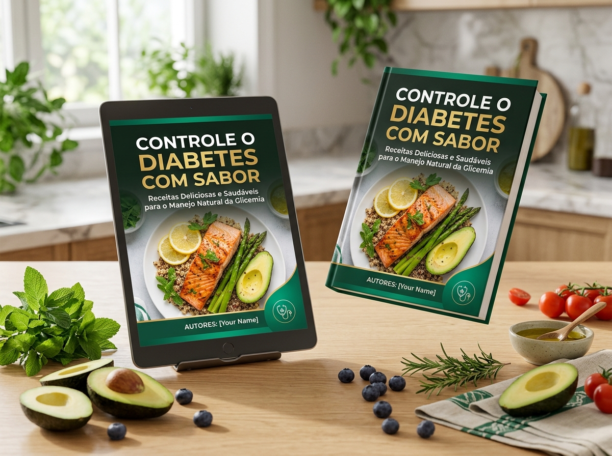
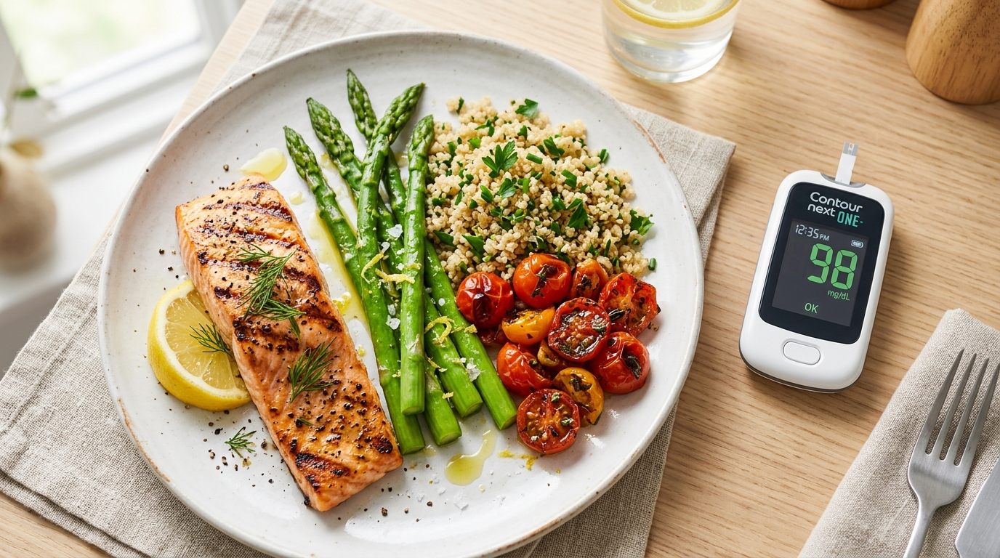

O único método alimentar 100% embasado na ciência: estruturado com base em 69 estudos médicos indexados, alinhado aos consensos da Organização Mundial da Saúde (OMS) e das principais Sociedades Internacionais de Diabetes.

Milhares de brasileiros acordam todos os dias travando uma batalha silenciosa e desgastante contra o prato de comida. Veja se isso soa familiar:
A angústia de levar uma garfada à boca e passar as duas horas seguintes temendo um pico de glicose perigoso e descontrolado.
O desânimo de receber cardápios sem cor, sem sabor e sem tempero, que parecem um castigo diário em vez de nutrição.
Tabelas confusas, balanças de cozinha, aplicativos lentos e contas matemáticas que transformam cada refeição em uma prova cansativa.
A tristeza de ter que recusar uma boa feijoada de domingo, um pão de queijo quentinho, um baião de dois ou uma sobremesa em família.
Um vídeo diz que pode comer fruta, o outro proíbe; um site condena o arroz, outro manda comer aveia. Afinal, em quem confiar?
O pavor constante de ver a visão enfraquecer, os rins falharem ou desenvolver neuropatia e feridas difíceis de cicatrizar nos pés.
Veja o contraste entre as antigas orientações ultrapassadas e o método moderno de nutrição com sabor:
Você não precisa de restrição cega. Você só precisa das combinações alimentares corretas comprovadas pela ciência para estabilizar a insulina enquanto come o que ama.
Tudo organizado de forma intuitiva para você nunca mais perder tempo na cozinha sem saber o que preparar.
Veja como cada receita vem detalhada passo a passo com tempo, calorias e carboidratos contados:
Com lombo suíno nobre, feijão preto cozido com louro fresco e couve no alho dourado. Sem carnes gordurosas e com alto teor de fibras solúveis protetoras.
Crocante por fora, puxa-puxa por dentro. Feito com queijo curado, farinha de amêndoas e linhaça dourada. Glicemia estável e saciedade duradoura.
Cremoso, aveludado e rico em polifenóis antioxidantes que melhoram a sensibilidade à insulina. Mata a vontade de comer doce com segurança total.
O segredo das 400 receitas não é passar fome, e sim criar uma blindagem digestiva que impede a glicose de invadir a corrente sanguínea de forma abrupta:
Ingredientes como psyllium, chia e sementes funcionais formam um gel natural no estômago que retarda a absorção dos carboidratos.
Aplainam a curva de resposta insulínica, promovendo saciedade celular por até 5 horas sem sonolência pós-prandial.
Cúrcuma, canela verdadeira, gengibre e orégano que auxiliam na sensibilidade celular à insulina de forma natural e gostosa.

Não importa em qual momento do diagnóstico você está, as 400 receitas foram pensadas para a sua rotina real:
Ideal para reverter a resistência à insulina, desinflamar o fígado e reduzir a hemoglobina glicada (HbA1c) comendo de forma gostosa.
Precisão milimétrica: cada uma das 400 receitas vem com os gramas exatos de carboidratos líquidos já calculados para facilitar a contagem de insulina.
O momento crucial de ouro. Ajuste sua alimentação antes de o diabetes se consolidar e traga seus exames de volta à faixa de segurança rapidamente.
Receitas fáceis de mastigar, fáceis de digerir e com ingredientes 100% acessíveis na feira ou no mercadinho do bairro. Sem nomes caros ou raros.
Você não nasceu para viver comendo comida de hospital. Nossos nutricionistas e chefs reestruturaram a bioquímica dos maiores pratos do Brasil para você comer com orgulho e glicemia estável:
Cada uma dessas receitas passou por testes com monitoramento contínuo de glicose: saciedade duradoura, zero picos de açúcar e toda a família comendo o mesmo prato feliz reunida no domingo.
Material complementar de 97 páginas desenvolvido para acelerar a sua recuperação e blindar a sua saúde:
Exercícios simples de mobilidade e protocolos diários de inspeção e autocuidado que ativam a microcirculação periférica, prevenindo dores, dormência e lesões graves nos pés.
O filtro definitivo sobre canela, carqueja, feno-grego, cúrcuma e dezenas de ervas. Saiba exatamente quais compostos têm respaldo científico real para otimizar a sensibilidade à insulina.
Entenda seus números sem mistério: Hemoglobina Glicada (HbA1c), HOMA-IR, Glicemia de Jejum e Colesterol explicados de forma simples para você conversar de igual para igual nas consultas.
O manual de sobrevivência social: estratégias práticas para pedir nos 12 ambientes mais comuns (restaurantes por quilo, churrascarias, pizzarias, comida japonesa e festas de família).
Homens e mulheres de 35 a 70 anos que recuperaram a saúde, a disposição e o prazer de viver:
"Minha hemoglobina glicada estava assustadora, em 9,2%. O médico já estava cogitando insulina e eu me sentia em pânico. Achava que ter diabetes era comer alface aguada e peito de frango seco pro resto da vida. Quando comecei a fazer a feijoada leve e o pão de queijo funcional do livro, parecia bom demais pra ser verdade. Em 4 meses de receitas, refiz os exames: minha glicada caiu para 6,1% e perdi 11 kg! Meu médico me deu os parabéns na consulta. Vale cada centavo!"
"Tenho diabetes tipo 2 há 8 anos e já estava sentindo formigamento chato nos pés. O bônus de cuidado com os pés me ensinou massagens simples que mudaram minhas noites de sono. E as receitas de almoço são maravilhosas! Não sinto mais aquele sono pesado que me derrubava depois de almoçar. Minha glicemia em jejum saiu de 184 para 98 mg/dL estáveis. Voltei a caminhar no parque com meus netos com uma energia que eu não tinha há 10 anos!"
"Sou motorista, passo o dia todo na correria e comia qualquer coisa em posto de estrada. Quando minha glicose bateu 230, o susto foi grande. O que me salvou nesse eBook foi que as receitas já vêm com os carboidratos contados. Não perco tempo fazendo conta em aplicativo! Faço lanches rápidos em 15 minutos e levo comigo. Em 60 dias sequei 8 kg e minha glicemia normalizou. Foi a coisa mais prática que já comprei na internet."
"Eu chorava achando que nunca mais ia poder comer moqueca, bobó e doces baianos com a minha família no domingo. Domingo passado fiz a receita da moqueca leve e servi pra todo mundo. Ninguém percebeu diferença! Minha glicose 2 horas depois estava em 112, impecável. Esse material não é só uma lista de receitas, é devolver a nossa dignidade e a alegria de sentar à mesa com quem a gente ama."
"Descobri o pré-diabetes em um check-up anual da firma. Como meu pai teve problemas renais graves por causa do diabetes, aquilo me apavorou. Comecei a seguir os cafés da manhã e jantares do Módulo 1. Em 45 dias minha glicemia de jejum foi de 118 para 84 mg/dL! Minha gordura visceral despencou, perdi 6 centímetros de cintura e hoje tenho um pique impressionante."
"Eu vivia com medo de comer qualquer coisinha e ter complicações nos olhos ou nos rins. Esse medo me paralisava. As 400 receitas tiraram essa culpa das minhas costas. O estrogonofe com iogurte e a torta de frango viraram os pratos preferidos do meu marido e dos meus filhos. Não preciso cozinhar panela separada pra mim nunca mais!"
Tudo o que você precisa em 582 páginas e 4 bônus exclusivos por uma fração do valor de uma única consulta médica particular:
O risco é 100% nosso. Adquira o eBook hoje, baixe o material no seu celular, tablet ou computador e prepare as primeiras receitas. Se dentro de 7 dias você não sentir alívio imediato na sua rotina alimentar, ou se simplesmente achar que o material não é para você, basta enviar um único e-mail e devolveremos 100% do seu dinheiro, centavo por centavo. Sem burocracia, sem perguntas e sem ressentimentos.
Respostas claras e transparentes para você tomar a melhor decisão para a sua saúde: